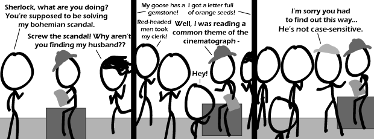

Comic JK 534
When I Feel Like It
⇤
<
?
>
⇥

⇤
<
?
>
⇥
Forum
.
RSS
.
Digg
.
Facebook
.
Reddit
.
Twitter
.
Stumbleupon
Enter your thoughts on number 534 here. Please, no spamming, trolling, or Cupcakes. I have to say, either it is quite lame, or I don't get it. It think it's the latter... >Nope. It's the former. >>Guys, guys! It's a PUN. >>>That pun is as phunny as this one. >>>>I still think it's the latter. I see no connection between the common theme of the cinematograph and him not beeing case-sensitiv. And I see no connection to the common meaning of the phrase "case-sensitive". I think I lack some essential knowledge to get this one. Or it's really just lame. >>>>>It's applying the term "case sensitive" (meaning recognizing capitals and non-capitals as separate characters) to Sherlock Holmes, who isn't all that sympathetic to many of his cases. I'm not sure what the "common theme of the cinematograph" refers to, though. >>>>>>I got that (is missing sympathy to cases), but normally there's a reference in one way or another to the original meaning, in this case that of differentiating between upper and lower case characters, but I'm missing this here entirely. Hmm... Unrelated to this comic, but I just noticed that 0 no longer seems to be the Easter egg :( >If you are referring to the Alt-Text that appears when you hover over the picture, then that has never been associated with a 0. Otherwise... enlighten us and tell us what you are talking about. >>There used to be a comic id 0, which was a picture of an Easter egg with a congratulations message. Now 0 goes to the latest page instead. >>>I noticed that too. So sad :( >>>The comic is still there: comicjk.com/Pics/Comic0.gif >>>>The comments box is gone though... >>>>>I found it! comicjk.com/comic.php/1. (include the dot) >>>>>> Bets on what it's gonna be next! I bet [2] Enter your thoughts on number 534 here. Please, no spamming, trolling, or ... I have to say, either it is quite lame, or I don't get it. It think it's the latter... >Nope. It's the former. >>Guys, guys! It's a PUN. >>>That pun is as phunny as this one. >>>>I still think it's the latter. I see no connection between the common theme of the cinematograph and him not beeing case-sensitiv. And I see no connection to the common meaning of the phrase "case-sensitive". I think I lack some essential knowledge to get this one. Or it's really just lame. >>>>>It's applying the term "case sensitive" (meaning recognizing capitals and non-capitals as separate characters) to Sherlock Holmes, who isn't all that sympathetic to many of his cases. I'm not sure what the "common theme of the cinematograph" refers to, though. >>>>>>I got that (is missing sympathy to cases), but normally there's a reference in one way or another to the original meaning, in this case that of differentiating between upper and lower case characters, but I'm missing this here entirely. Hmm... Unrelated to this comic, but I just noticed that 0 no longer seems to be the Easter egg :( >If you are referring to the Alt-Text that appears when you hover over the picture, then that has never been associated with a 0. Otherwise... enlighten us and tell us what you are talking about. >>There used to be a comic id 0, which was a picture of an Easter egg with a congratulations message. Now 0 goes to the latest page instead. >>>I noticed that too. So sad :( >>>The comic is still there: comicjk.com/Pics/Comic0.gif >>>>The comments box is gone though... >>>>>I found it! comicjk.com/comic.php/1. (include the dot) >>>>>> Bets on what it's gonna be next! I bet [2]